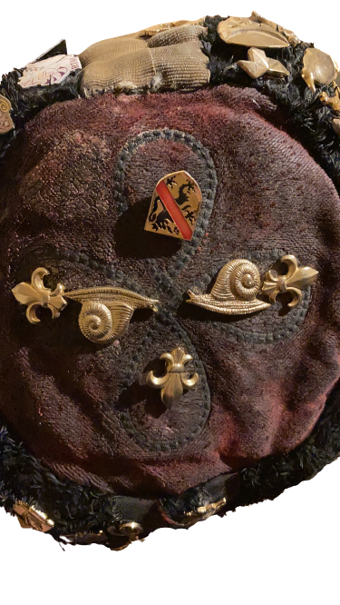
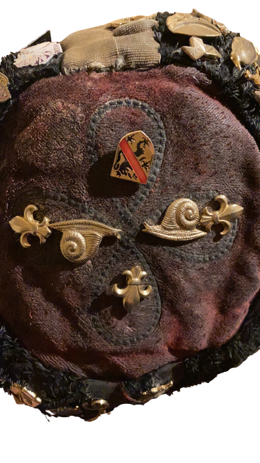

La Liégeoise
Témoignage de Fred Dawance
Lorsque jeune bleu, je suis arrivé à Namur , il y avait la RTM, la Carolo et la Lux .... Très épris de folklore estudiantin et entrepreneur… je ne voyais pas pourquoi une régionale et mieux encore, une Provinciale ne verrait pas le jour. On était pas beaucoup...une petite dizaine… Je suis allé à la Province de Liège où on m’a donné 500 autocollants qui trainait dans un placard (c’était juste le blason de la province) Vite Vendus, cela constitua notre capital de départ.
À noter: c’est moi qui est réuni les président RTM et Carolo pour créer le CIR , à l’image de la Fédé à Louvain-la-Neuve. Bien que jamais mentionné, je suis en fait à l’initiative de la création du CIR dont je me suis effacé des statuts car la Liégeoise était trop jeune à mon goût pour faire le malin.. 30 ans après… je peux !
La Couronne sur le croisillon ; ce fut en fait une idée de fin de guindaille… Royaliste, je trouvais la bande papale assez jolie sur les calottes de Louvain-la-Neuve… les FNDP étant Jésuites… la bande papale ne le faisait pas et la couronne tant symboliquement que esthétiquement , c’était top… avec un certain succès depuis je crois…
J’ai eu la chance d’aller incognito à un banquet annuel de la Liégeoise qui se déroulait près de Hannut . Ce fut émouvant pour moi de voir tant de monde à un événement de la Liégeoise.. à nos débuts, nous étions heureux de voir 15 Liégeois...
L’Ordre du Perron
L’ordre du Perron est une récompense (vlek) interne à la Liégeoise. Elle est attribuée par le Grand- Maître en accord avec les autres vlekés des années précédentes. Principalement elle récompense les membres ayant fait preuve d’une grande motivation ou ayant rendu un grand service à la Liégeoise.
Elle s’attribue aussi en signe de reconnaissance envers les plus anciens d’entre nous. La première fois qu’on reçoit cette récompense, on devient bachelier du l’Ordre de Perron, si on la reçoit une deuxième fois, on est élevé au rang de chevalier.
Le Grand-Maître de l’Ordre du Perron est automatiquement le président sortant. Le dessin du Vlek est un perron sur fond sang et or. Une étoile surplombe le perron lorsque que l’on est chevalier.
Syllabus de Calotte Régionale Liégeoise FNDP 2008-2009
 

L’Ordre du Coq Liégeois
L’ordre du Coq Liégeois est l’ordre folklorique de la Liégeoise, il fût créé pas Tonio en 1993. Son Grand-Maître est le Bouffon en fonction, il est le gardien du drapeau de l’Ordre. Il récompense les auteurs de bonnes guindailles et les autres bouffonneries.
Cet Ordre possède un chant propre: le «Poule en haut» (créé par Gégé en 1994) et remet plusieurs récompenses à diverses occasions telle que des concours de guindaille, etc.
Syllabus de Calotte Régionale Liégeoise FNDP 2008-2009
Les Djîn Djus d’la
Les Djîn Djus d’la sont une autre récompense. Elle est réservée aux personnes extérieures à la Liégeoise, «les d’gens dy oud’la» étant les habitants d’Outre-Meuse.
Elle est remise par le Président en fonction en accord avec le comité et est attribuée en guise de remerciement pour une participation active aux activités organisées par la Liégeoise tout au long de l’année.
Le dessin de ce Vlek est une chope souriante sur un fond sang et or.
Syllabus de Calotte Régionale Liégeoise FNDP 2008-2009


 |
 |
 |
 |
 |
 |
 |